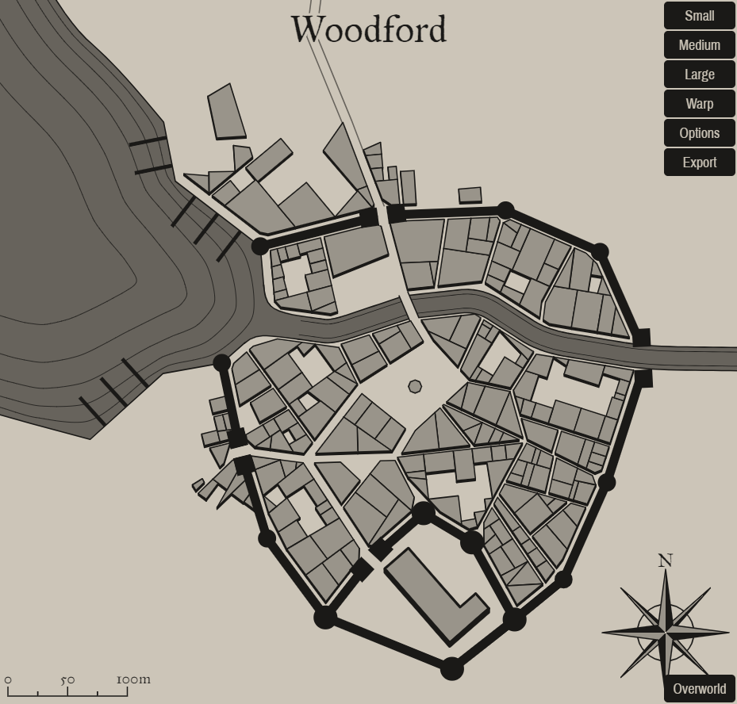

Woodford
A mystical settlement in a fantastical world
Woodford

Background
Add background flavor.
1
PAGE 1 | Woodford
Settlement Features
Woodford is a large town 2,001-5,000 located in the foot hills region of the areas greater temperate rain forest. The settlement seems to be matured. Woodford and the local surroundings are under the control of an autocrat.
Demographics
- Name: Woodford
- Real population: 2580
- Population: Large Town 2,001-5,000
- Number by race: Human 40%, Dwarf 10%, Elf 10%, Gnome 10%, Halfling 10%, Half-elf 15%, Half-orc 5%,
- Wealth: 4
- Age: 4
- Alignment: 2
- Government Type: An Autocrat - A single individual chosen by the people rules the community. This leader’s actual title can vary—mayor, burgomaster, lord, or even royal titles like duke or prince are common.
- Settlement Trait: Militarized
- Number Of Wards: 14
- Number of Districts: 3
Industry and Economy
- Primary Raw Materials: Forestry
- Shops of Note: Blacksmith, Lumber Mill, Gambling House, Tailor.
- Number Of Inns/Taverns: 2
- Inns/Taverns of Note: The Mean Bleacher, The Mate Tavern.
Districts
Pleecerd Vale
Get desc
West Loattoatnift Grove
Get desc
Midtown Cledard
Get desc
Taverns / Inns
The Mean Bleacher
Location
Midtown Cledard
Description
It's impossible to see through the closed windows, but the quiet sorrow from within can be felt outside.
Innkeeper
Bob
Menu
- Pork chop, Chicken eggs, Black beans, Apple (2 sp).
- Grilled Fillet of Salmon (6 sp)
- Apple Stuffed Mushrooms (8 cp)
- Pork liver, Seaweed, Succotash, Rice, Fruitcake (2 sp).
- Smoked Fresh Trout Fillets (4 sp)
The Mate Tavern
Location
Midtown Cledard
Description
It's as dreary inside as it is on the outside. Hardwood beams support the upper floor and the candles attached to them. The walls are decorated with mounted animal heads and small animals, though most have become worn and broken, given the place an even creapier feel.
Innkeeper
Bob
Menu
- Stewed Eel and Turnip, Tankard of Cider (8 cp)
- Stewed Onions, Mug of Cider (5 cp)
- Roasted and Smoked Pork Spareribs (6 sp)
- Stewed Lentils, Mug of Perry (4 cp)
- Stewed Mutton and Whey Cheese, Tankard of Perry (8 cp)
2
PAGE 2 | Woodford